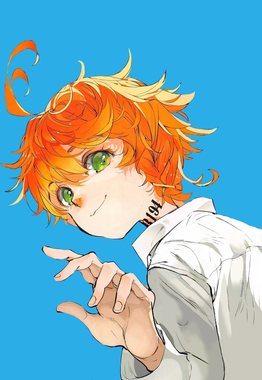
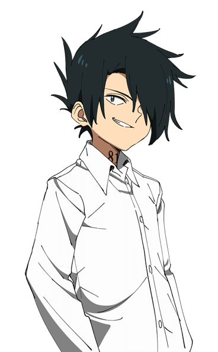
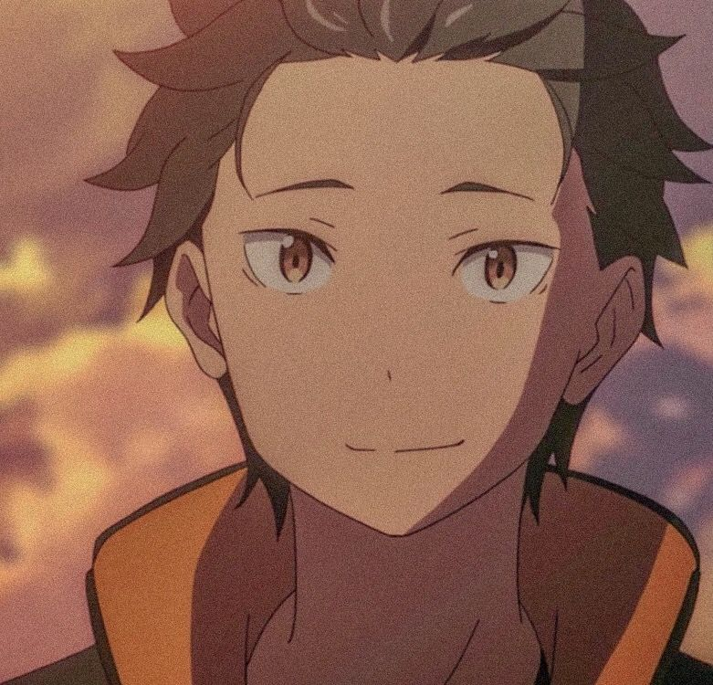
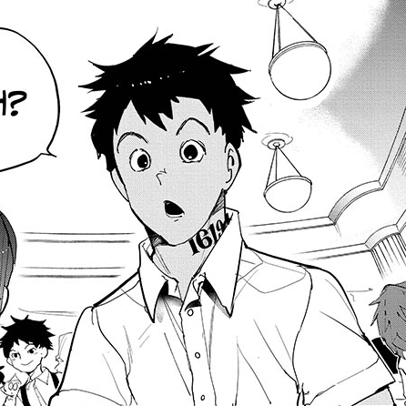

Emma (Autoridad de la Codicia y Respiración del Trueno), Emma posee el Factor de la Bruja de la Codicia, manifestado a través de una variante defensiva y conceptual muy poderosa llamada El Corazón del León. Esta habilidad le permite "congelar" el tiempo de su propio cuerpo u objetos que toque, creando un escudo absoluto e inamovible capaz de absorber el 100% del daño e impactos KO de ataques de nivel Luna Superior. Sin embargo, esta protección tiene un costo devastador: cada golpe consecutivo que procesa su escudo consume drásticamente su propia energía vital, desgastando su expectativa de vida y dejándola al borde del colapso físico si abusa de ella.
Al principio de la historia, tras escapar a duras penas de Grace Field House junto a sus hermanos y Subaru, Emma activa esta "magia" de forma instintiva, pero se encuentra atrapada en un cuerpo frágil de 11 años sin la velocidad para esquivar a los demonios velocistas. Todo cambia tras un año de tortuoso entrenamiento con los supervivientes ocultos en el mundo exterior, donde Emma construye el contenedor físico necesario aprendiendo la Respiración del Trueno. Al combinar su Factor de Bruja con la Primera Postura: Destello de Trueno, Emma logra una sinergia letal: ahora puede desplazarse a velocidades ultrasónicas lineales para interceptar los ataques enemigos directamente en su punto de origen, activando su escudo en el microsegundo exacto del impacto para proteger a sus hermanos.

Ray (Autoridad de la Ira y Respiración de la Llama), Ray posee el Factor de la Bruja de la Ira , una habilidad que le permite interconectar las emociones y el dolor físico entre las personas de su entorno. Sin embargo, tras un año de tortura biológica en el mundo exterior para adaptar su cuerpo a la velocidad de las Lunas Superiores , Ray aprendió a redirigir todo ese resentimiento, adrenalina y furia acumulada hacia su propio sistema nervioso y muscular. Esto desata el Purgatorio de la Ira (Kaioken Vital) , una transformación física destructiva que tiñe su cuerpo con un aura carmesí ardiente , multiplicando sus estadísticas físicas desde el nivel básico (x2) hasta su límite más peligroso (x3 / x4). Mantener este estado quema su energía a un ritmo alarmante por segundo y le causa desgarros musculares severos.
Para esta historia, Ray tiene la edad de 11 a 12 años recién cumplidos al salir de Grace Field House. Como el estratega frío y calculador del grupo , se dio cuenta rápidamente de que la velocidad sónica de los demonios de Muzan significaba una muerte instantánea para cuerpos infantiles , por lo que se convirtió en el ejecutor más despiadado del escuadrón. Para estabilizar la presión interna del Kaioken y evitar que sus arterias estallaran por la sobrecarga , Ray adoptó la Respiración de la Llama. La hiperventilación pulmonar de este estilo estabiliza su flujo sanguíneo y le otorga cortes verticales devastadores de pura presión térmica por fricción , permitiéndole sostener duelos de alta velocidad contra monstruos como Gyutaro o Akaza.

Subaru Natsuki (Autoridad de la Envidia y Respiracion del Agua), Subaru es capaz de regresar de la muerte a través del Regreso por la Muerte (Return by Death) para aprender los patrones de ataque de sus enemigos y encontrar el único camino táctico que guíe a sus aliados hacia la victoria. Antes de ser misteriosamente transportado desde el reino de Lugunica hasta los fríos muros de Grace Field House, Subaru contaba con la ventaja de que sus bucles guardaban puntos de control que le daban minutos u horas de margen. Sin embargo, al haber sido rejuvenecido biológicamente a un cuerpo infantil de apenas 11 años, el Factor de la Bruja de la Envidia se ha vuelto extremadamente inestable y caótico: ahora sus bucles duran apenas 50 segundos. Este cambio drástico lo deja con un margen de error prácticamente nulo, obligándolo a vivir y morir en un pestañeo para corregir fallas en tiempo real en mitad del combate.
Para esta historia, Subaru conserva todos sus recuerdos intactos sobre Lugunica, Emilia, Rem y sus antiguos compañeros, así como los traumas de sus enemigos pasados; no obstante, al despertar en el orfanato descubrió con horror que ha perdido los factores de la Codicia, la Pereza y la Gula. Al no contar con fuerzas físicas sobrehumanas y sufrir el desgaste mental de morir miles de millones de veces en bucles de menos de un minuto, Subaru se vio obligado a buscar una disciplina que calmara su mente rota y le diera control. Durante el año de entrenamiento en el mundo exterior, adoptó la Respiración del Agua. La fluidez y las posturas defensivas de este estilo pulmonar no solo le permiten desviar los feroces ataques físicos de demonios velocistas, sino que le ayudan a mantener la calma absoluta bajo una presión psicológica extrema, canalizando el dolor de sus muertes en movimientos fluidos y precisos.

Don (Autoridad de la Pereza y Respiración del Viento), Don posee una variante defectuosa y violenta de la Autoridad de la Pereza, manifestada como una Fuerza Invisible (similar a las manos invisibles, pero concentrada en impactos de masa pura). Esta habilidad le permite generar golpes y escudos invisibles a distancia cinematográfica, capaces de fracturar la armadura de una Luna Inferior. Sin embargo, el costo biológico es una maldición suicida: cada vez que Don invoca esta fuerza, sus vasos sanguíneos sufren una presión interna brutal, haciéndolo escupir sangre, y el desgaste celular acelera su envejecimiento prematuro.
Al salir de Grace Field House, Don era incapaz de controlar la dirección de sus impactos sin destruir sus propios brazos. Tras el año de entrenamiento junto a los veteranos Yugo y Lucas, Don adoptó la Respiración del Viento. Esta disciplina pulmonar fue su salvación táctica: al canalizar la Fuerza Invisible a través de las posturas de viento, Don aprendió a envolver sus impactos en corrientes huracanadas. Esto no solo disimula el retroceso físico en su cuerpo, sino que le permite crear ráfagas cortantes ocultas de largo alcance, convirtiéndose en el artillero pesado y de contención del grupo.